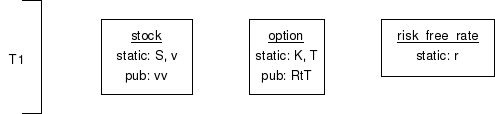
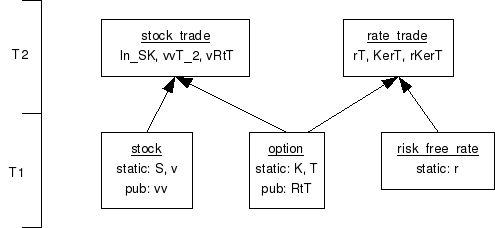
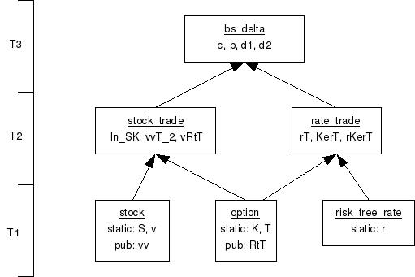
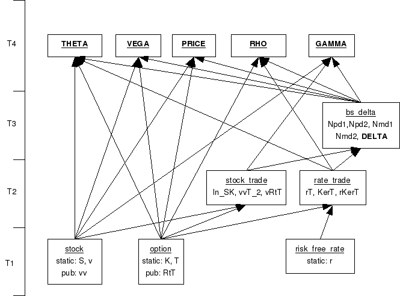

| Application version | 3.0 |
| Trad4 version | 3.0 |
| Document version | 3.0 |
| Author | schevans |
| Date | 22-06-09 |
This document originally appeared in the 2.0_beta_04 version of The Manual. It is a model for the open form Black Scholes and calculate the price and greeks of European options on non-dividend paying stocks. To start with we're just going to model the price and introduce the greeks later.
The full equation for the price of a call (c) and put option (p) is given by[1]:
c = S*N(d1) - Ke(-rT) * N(d2)
p = Ke(-rT) * N(-d2) - S*N(-d1)
where
d1 = (ln(S/K) + rT + vvT/2) / (v * sqrt(T))
and
d2 = (ln(S/K) + rT - vvT/2) / (v * sqrt(T))
and
N(x) is the cumulative normal distribution of x
and
S = stock price
K = strike price
r = risk free rate
v = volatility
vv = volatility squared
T = time to maturity
Now we need to decompose this into a viable graph. There are various ways to do this, but we'll start by picking off the feeds.
Looking at the feeds, we can see that T, the time to maturity, and K, the strike price, are properties of the option contract. S, the stock price and v the volatility are both properties of the stock. The risk free rate r is not related to either of these two. So now we have our feed objects:

RtT (sqrt(T)) and vv (v*v) are included at this level as they are simple transformations of the object's own inputs. We know they will be needed by the tiers above so we may as well calculate them now.
The next set of objects we need to model are the T2 objects. We'll do this by creating an object for any multiplicative or divisive operation that appears more than once, like so:
c = SN_pd1 - KerT * N_pd2
p = KerT * N_pd2 - SN_md1
where
d1 = (lnSK + rT + vvT_2) / vRtT
and
d2 = (lnSK + rT - vvT_2) / vRtT
and
SN_pd1 = S*N(d1)
SN_md1 = S*N(-d1)
KerT = K*e(-r*T)
N_pd2 = N(pd2)
lnSK = ln(S/K)
rt = r*T
vvT_2 = (v*v*T) / 2
vRrT = v*sqrt(T)
The names I've chosen for the objects roughly represent what they are and what they do, but there's no formal convention - feel free to call them what you want.
You'll notice that I don't lump KerT and N_pd2 together even though they are multiplicative. This is to simplify this model of price only. When we introduce the greeks we will add the object KerTN_pd2.
Now we have the published values we'll want from the T2 objects, we will want to group these into objects. lnSK for example is a function of the stock_feed and the option_feed, so we create a new object stock_trade. Likewise vRtT also depends on the stock_feed and the option_feed, so we can lump that in with the stock_trade object. We do this for all the T2 objects, like so:

For the next tier we'll need to decide how to arrange c, p, d1 and d2. Looking at these functions, d1 and d2 depend on all the feeds, and c and p depend on both d1 and d2. This means there is no further decomposition we can do and we'll need to lump all the values in the same object, bs_delta, like so:

At this stage we need to introduce the greeks[2]:
| Call | Put | |
| Delta | N(d1) | N(d1)-1 |
| Gamma | N(d1)/Sv*sqrt(T) | |
| Vega | SN(d1)*sqrt(T) | |
| Theta | Given below | |
| Rho | Kte(-rT)*N(d2) | -KTe(-rT)*N(-d2) |
Where Theta is given by:
Theta(call) = ( -SN(d1)v -rKe(-rt)N(d2) ) / 2*sqrt(T)
Theta(put) = ( -SN(d1)v + rKe(-rt)N(-d2) / 2*sqrt(T)
Now we need to decompose these in terms of the T(1-3) objects we've already created. For example, we can see delta is a function only of N(d1) and for this reason it makes sense to include it in the bs_delta object.
Gamma is a function of N(d1) which is a property of bs_delta, S which is a property of the stock and v*sqrt(T) which is a property of stock_trade - vRrT.
We'll do this for the rest of the greeks, making some changes in the process.
Price has been broken out into it's own object and bs_delta now just provides Npd1 etc. In this way, once bs_delta is completed the T4 objects can all run concurrently.
1 Hull:"Options, Futures and Other Derivatives", Fifth Edition, p246
2 http://en.wikipedia.org/wiki/Black_scholes#Greeks